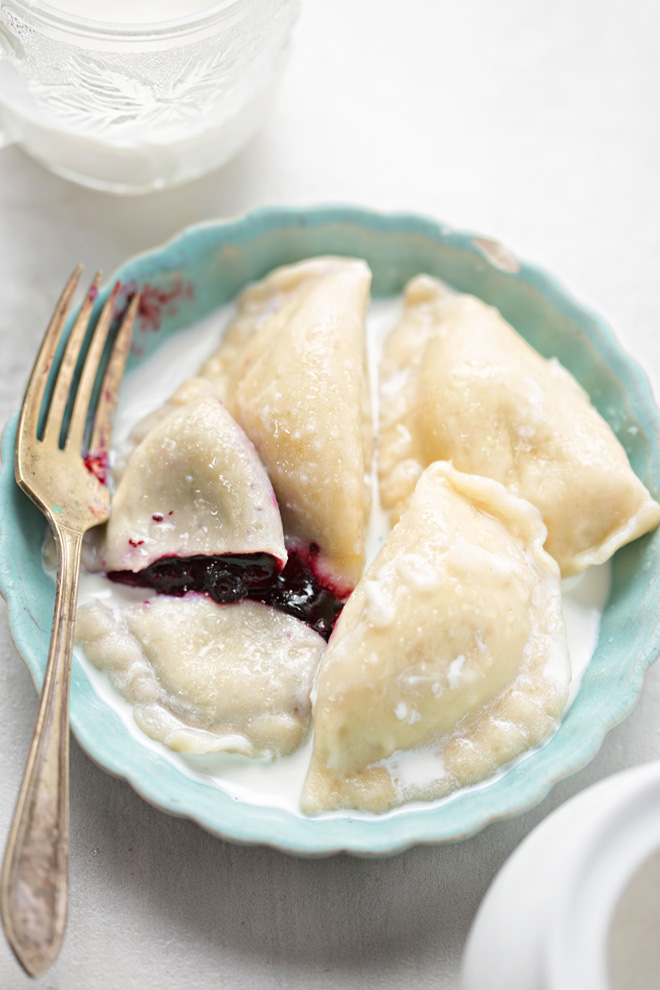

Blueberry Pierogi

DESCRIPTION
Blueberry Pierogi are classic Polish dumplings filled with real summer gems: sweet, juicy blueberries, fresh off the bush. A dollop of sweetened cream balances the acidity of the fruit beautifully. Serve them for lunch or as a scrumptious dessert.
INGREDIENTS
For the dough
- 4 US cups (500 g) all-purpose flour
- 1 cup (8.45 fl oz, 250 ml) hot milk (or mix half n' half with hot water)
- 1 teaspoon salt
For the blueberry filling
- 2 cups (7 oz, 200 g) blueberries or bilberries (fresh or frozen)
- 1 tablespoon all-purpose flour
For the toppings
- sweetened cream, 12% or 18%
- a pinch of icing / powdered sugar, to sprinkle
INSTRUCTIONS
Dough
- Sift the flour, make a well in the flour dome. Pour in a small amount of hot milk and mix it in. Knead rapidly, continually adding enough milk to get a soft, elastic dough.
- Divide the dough into a few parts. Spread the first part of the dough on a floured worktop.
- Use the rolling pin, roll into a thin piece of dough. Cut the dough using a glass or a round cutter.
Blueberry Filling
- Rinse fresh blueberries under a gentle stream of water.
- When using frozen berries, remove them from the freezer just before making pierogi (dumplings are easier to put together with frozen fruit).
- Dry on paper towels, spread on a tray and sprinkle with 1 tablespoon of flour.
- Place one teaspoon of blueberries in the middle of each dough circle. Fold dough over filling, press edges together. Continue until you're out of dough and blueberries.
Finishing Up
- Bring a pot of salted water to a boil. Reduce the heat to a simmer.
- Drop dumplings in and cook for 5 to 6 minutes - until they start to float.
- In the meantime, prepare some sweetened cream. Place some cream in a bowl, add some icing/powdered sugar, mix it in. Have a taste - is it sweet enough? If not, add more sugar and repeat.
- Remove pierogi from the pot with a slotted spoon. Serve on the plates and top with sweetened cream.
ENJOY! SMACZNEGO!
Return to main page